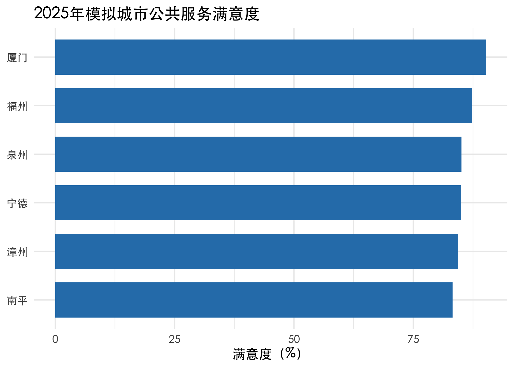
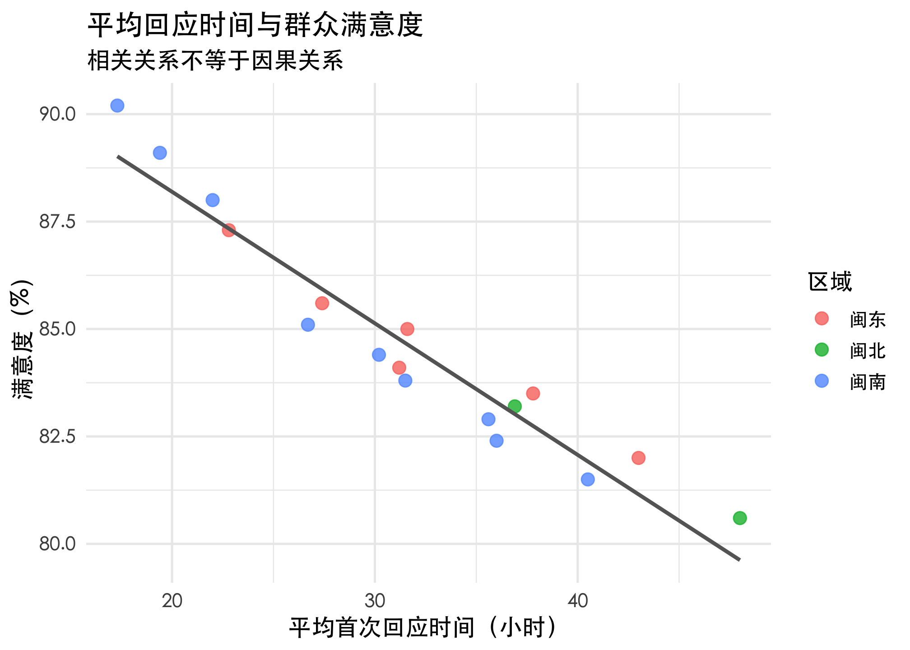
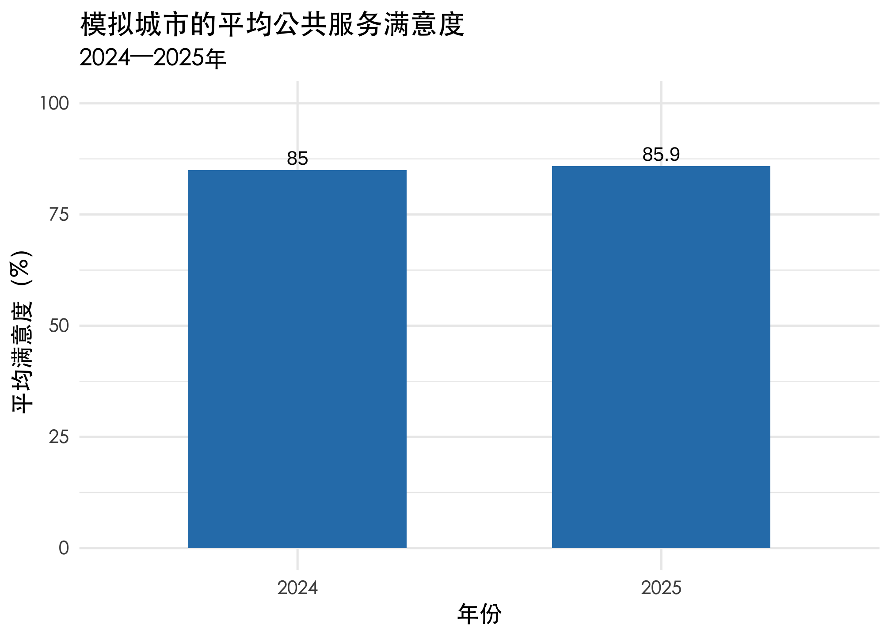

flowchart LR
A[公共管理问题] --> B[R代码]
B --> C[分析结果]
C --> D[Quarto网页或报告]
E[RStudio项目] -.组织全过程.-> B
E -.组织全过程.-> Dflowchart LR A[公共管理问题] --> B[R代码] B --> C[分析结果] C --> D[Quarto网页或报告] E[RStudio项目] -.组织全过程.-> B E -.组织全过程.-> D
公共管理大数据分析：R语言基础
September 14, 2026
本讲不是一份“R语法大全”，而是一次完整的数据分析入门。我们将围绕一份模拟的城市公共服务数据，完成从建立项目、导入数据、整理变量、分组汇总到制作图表的基本工作流。
代码只是回答公共管理问题的工具。学习R时，应始终先问：我想用数据回答什么问题？
完成本讲后，你应当能够：
read_csv() 导入数据，并用 glimpse() 检查数据结构；filter()、select()、mutate()、group_by() 和 summarise() 整理数据；ggplot2 制作一张基本图表；公共管理研究的数据来源正在从单一的问卷和统计年鉴，扩展到行政记录、政策文本、政务热线、空间数据、网络数据和平台行为数据。R可以帮助我们把数据处理、分析、可视化和报告写作连接成一个可重复的工作流。
在本课程中，R主要承担四类任务：
| 工具 | 主要作用 | 可以把它理解为 |
|---|---|---|
| R | 执行统计计算和数据分析的语言 | 发动机 |
| RStudio | 编写代码、管理文件和查看结果的集成环境 | 驾驶舱 |
| Quarto | 将文字、代码、结果与图表整合为网页或报告 | 出版系统 |
三者的关系可以概括为：
后续各专题虽然方法不同，但都遵循类似的分析过程：
公共管理问题 → 数据获取 → 数据整理 → 描述与可视化 → 建模与推断 → 政策解释与沟通
本讲先完成这条主线的最小版本。最终目标不是记住所有函数，而是能够独立完成一轮小型分析。
建议为每个课程作业或研究问题建立一个 RStudio Project。一个简单的项目可以采用以下结构：
city-service-project/
├── data/ # 原始数据和整理后的数据
├── R/ # R脚本
├── figures/ # 图表
├── output/ # 表格和模型结果
├── report.qmd # 分析报告
└── city-service-project.Rproj在 RStudio 中依次选择：
File → New Project → New Directory → New Project
以后应通过 .Rproj 文件重新打开项目，而不是先打开某个脚本，再临时寻找数据文件。
建立 Project 后，R会把项目根目录作为分析起点。读取文件时使用相对路径：
不推荐在项目脚本中使用只对自己电脑有效的绝对路径：
相对路径使同一项目更容易在不同电脑之间移动，也便于教师复现学生的分析结果。
可以用下面的命令查看当前工作目录，但通常不需要手动修改它：
不要把分析过程只保存在 Console（控制台）或 Environment（环境）中。应将从原始数据到最终结果的操作写入脚本或 .qmd 文件，使别人能够从头重新运行。
建议的脚本命名方式如下：
01-import-data.R
02-clean-data.R
03-describe-data.R
04-model-data.R
05-make-figures.R文件名应当：
R包是扩展R功能的工具集合。安装通常只需进行一次：
每次重新启动R后，都需要加载本次分析使用的包：
install.packages() 类似“在电脑上安装软件”；library() 类似“打开已经安装的软件”。不要把 install.packages() 写在每次都会自动执行的分析文件中。
本课程采用三个基本代码风格：
这些规则不是为了形式整齐，而是为了让几周或几个月后的自己仍能读懂代码。
赋值符号 <- 可以把右侧的值保存到左侧命名的对象中。
[1] "厦门"[1] 90.2这里分别创建了字符、整数、数值和逻辑对象。R区分大小写，因此 city 与 City 是两个不同的对象。
向量是R中最基本的数据结构。函数 c() 可以把多个值组合为一个向量。
[1] 58400 62000 67000[1] 85.66667R的许多运算可以直接作用于整个向量：
population_10k <- c(846, 852, 858)
complaints_per_10000 <- complaints / population_10k
round(complaints_per_10000, 1)[1] 69.0 72.8 78.1上例中的人口单位为“万人”，所以“投诉量 ÷ 人口（万人）”直接得到每万人投诉量。
函数接受输入并返回结果。例如：
mean() 和 round() 是函数；digits = 1 是参数，表示保留一位小数。本阶段不需要记住大量函数。重点是能读懂：对哪个对象，调用了什么函数，使用了哪些参数。
逻辑表达式返回 TRUE 或 FALSE，常用于筛选数据。
| 运算符 | 含义 |
|---|---|
== |
等于 |
!= |
不等于 |
>、>= |
大于、大于或等于 |
<、<= |
小于、小于或等于 |
& |
同时满足 |
\| |
至少满足一个 |
! |
取反 |
%in% |
是否包含在一组值中 |
注意：= 常用于指定函数参数，== 用于判断两个值是否相等。
R使用 NA 表示缺失值。缺失不等于0，也不等于“没有”。
[1] FALSE FALSE TRUE FALSE[1] NA[1] 27.13333如果不明确处理缺失值，很多统计函数会返回 NA。参数 na.rm = TRUE 表示计算前移除缺失值。
na.rm = TRUE 只解决计算问题，并没有解释数据为什么缺失。公共管理数据中的缺失可能来自未上报、选择性公开、系统更换或统计口径变化，应结合制度背景判断。
公共管理数据通常以二维表格出现：每一行是一个观察对象，每一列是一个变量。
service_snapshot <- tibble(
city = c("福州", "厦门", "泉州"),
year = c(2025, 2025, 2025),
population_10k = c(858, 540, 900),
complaints = c(67000, 53000, 63000),
satisfaction = c(87.3, 90.2, 85.1)
)
service_snapshot# A tibble: 3 × 5
city year population_10k complaints satisfaction
<chr> <dbl> <dbl> <dbl> <dbl>
1 福州 2025 858 67000 87.3
2 厦门 2025 540 53000 90.2
3 泉州 2025 900 63000 85.1这个数据框有3行、5列：
导入或创建数据后，不要立即建模。先确认数据是否符合预期。
Rows: 3
Columns: 5
$ city <chr> "福州", "厦门", "泉州"
$ year <dbl> 2025, 2025, 2025
$ population_10k <dbl> 858, 540, 900
$ complaints <dbl> 67000, 53000, 63000
$ satisfaction <dbl> 87.3, 90.2, 85.1# A tibble: 3 × 5
city year population_10k complaints satisfaction
<chr> <dbl> <dbl> <dbl> <dbl>
1 福州 2025 858 67000 87.3
2 厦门 2025 540 53000 90.2
3 泉州 2025 900 63000 85.1[1] "city" "year" "population_10k" "complaints"
[5] "satisfaction" [1] 3 5在 RStudio 中还可以使用：
建议形成固定检查习惯：
基础管道符 |> 把左侧结果传给右侧函数，使代码可以按分析顺序从上到下阅读。
# A tibble: 1 × 2
city satisfaction
<chr> <dbl>
1 厦门 90.2可以把它读作：
从
service_snapshot开始，然后筛选满意度不低于88的记录，然后保留城市和满意度两列。
| 函数 | 作用 | 对数据的影响 |
|---|---|---|
filter() |
按条件筛选观察值 | 减少行 |
select() |
选择变量 | 减少列 |
mutate() |
新建或修改变量 | 增加或改变列 |
group_by() |
指定分组方式 | 改变后续计算单位 |
summarise() |
计算汇总统计量 | 将多行压缩为摘要 |
下一节将用一份完整的模拟数据练习这些函数。
假设我们希望比较不同城市的政务热线办理效率，并讨论以下问题：
本讲使用一份教学模拟数据。数值仅为演示R工作流而构造，不代表任何城市的真实治理绩效，也不能用于实质性政策评价。
主要变量如下：
| 变量名 | 含义 | 单位/类型 |
|---|---|---|
city |
城市 | 字符 |
region |
区域 | 字符 |
year |
年份 | 整数 |
population_10k |
常住人口 | 万人 |
service_centers |
便民服务中心数量 | 个 |
online_cases |
政务热线受理量 | 件 |
closed_cases |
按期办结量 | 件 |
satisfaction |
群众满意度 | % |
avg_response_hours |
平均首次回应时间 | 小时 |
pm25 |
PM2.5年均浓度 | μg/m³ |
为了使本网页可以独立运行，下面将模拟CSV文本直接交给 read_csv()。在实际项目中，只需把 I(simulated_city_csv) 换成文件路径，例如 "data/city_service.csv"。
simulated_city_csv <- "city,region,year,population_10k,service_centers,online_cases,closed_cases,satisfaction,avg_response_hours,pm25
福州,闽东,2023,846,102,58400,55200,84.1,31.2,27.0
福州,闽东,2024,852,109,62000,60000,85.6,27.4,25.8
福州,闽东,2025,858,117,67000,65800,87.3,22.8,24.4
厦门,闽南,2023,532,83,46000,44800,88.0,22.0,21.0
厦门,闽南,2024,536,88,49200,48200,89.1,19.4,20.1
厦门,闽南,2025,540,94,53000,52300,90.2,17.3,19.3
泉州,闽南,2023,891,95,55000,51000,82.4,36.0,28.5
泉州,闽南,2024,896,103,58800,55800,83.8,31.5,27.2
泉州,闽南,2025,900,112,63000,60800,85.1,26.7,25.9
漳州,闽南,2023,508,64,30800,28500,81.5,40.5,30.0
漳州,闽南,2024,512,70,33700,31800,82.9,35.6,28.6
漳州,闽南,2025,516,77,36900,35400,84.4,30.2,27.1
南平,闽北,2023,265,39,17200,15600,80.6,48.0,24.8
南平,闽北,2024,267,43,18800,17400,NA,43.1,23.7
南平,闽北,2025,269,48,20900,19700,83.2,36.9,22.5
宁德,闽东,2023,315,42,19600,18200,82.0,43.0,26.2
宁德,闽东,2024,319,47,21800,20500,83.5,37.8,24.9
宁德,闽东,2025,323,53,24400,23300,85.0,31.6,23.6"
city_service <- read_csv(
I(simulated_city_csv),
na = c("NA", ""),
show_col_types = FALSE
)真实项目中的常见写法是：
Rows: 18
Columns: 10
$ city <chr> "福州", "福州", "福州", "厦门", "厦门", "厦门", "泉…
$ region <chr> "闽东", "闽东", "闽东", "闽南", "闽南", "闽南", "闽…
$ year <dbl> 2023, 2024, 2025, 2023, 2024, 2025, 2023, 2024, 202…
$ population_10k <dbl> 846, 852, 858, 532, 536, 540, 891, 896, 900, 508, 5…
$ service_centers <dbl> 102, 109, 117, 83, 88, 94, 95, 103, 112, 64, 70, 77…
$ online_cases <dbl> 58400, 62000, 67000, 46000, 49200, 53000, 55000, 58…
$ closed_cases <dbl> 55200, 60000, 65800, 44800, 48200, 52300, 51000, 55…
$ satisfaction <dbl> 84.1, 85.6, 87.3, 88.0, 89.1, 90.2, 82.4, 83.8, 85.…
$ avg_response_hours <dbl> 31.2, 27.4, 22.8, 22.0, 19.4, 17.3, 36.0, 31.5, 26.…
$ pm25 <dbl> 27.0, 25.8, 24.4, 21.0, 20.1, 19.3, 28.5, 27.2, 25.…# A tibble: 6 × 10
city region year population_10k service_centers online_cases closed_cases
<chr> <chr> <dbl> <dbl> <dbl> <dbl> <dbl>
1 福州 闽东 2023 846 102 58400 55200
2 福州 闽东 2024 852 109 62000 60000
3 福州 闽东 2025 858 117 67000 65800
4 厦门 闽南 2023 532 83 46000 44800
5 厦门 闽南 2024 536 88 49200 48200
6 厦门 闽南 2025 540 94 53000 52300
# ℹ 3 more variables: satisfaction <dbl>, avg_response_hours <dbl>, pm25 <dbl>[1] 18 10检查满意度变量中的缺失值：
# A tibble: 1 × 10
city region year population_10k service_centers online_cases closed_cases
<chr> <chr> <dbl> <dbl> <dbl> <dbl> <dbl>
1 南平 闽北 2024 267 43 18800 17400
# ℹ 3 more variables: satisfaction <dbl>, avg_response_hours <dbl>, pm25 <dbl>热线受理量既受治理问题数量影响，也受人口规模、平台可及性、公众投诉习惯和渠道整合方式影响。因此，受理量较高不能直接解释为“治理更差”。
service_core <- city_service |>
select(
city,
region,
year,
population_10k,
online_cases,
closed_cases,
satisfaction,
avg_response_hours
)
service_core# A tibble: 18 × 8
city region year population_10k online_cases closed_cases satisfaction
<chr> <chr> <dbl> <dbl> <dbl> <dbl> <dbl>
1 福州 闽东 2023 846 58400 55200 84.1
2 福州 闽东 2024 852 62000 60000 85.6
3 福州 闽东 2025 858 67000 65800 87.3
4 厦门 闽南 2023 532 46000 44800 88
5 厦门 闽南 2024 536 49200 48200 89.1
6 厦门 闽南 2025 540 53000 52300 90.2
7 泉州 闽南 2023 891 55000 51000 82.4
8 泉州 闽南 2024 896 58800 55800 83.8
9 泉州 闽南 2025 900 63000 60800 85.1
10 漳州 闽南 2023 508 30800 28500 81.5
11 漳州 闽南 2024 512 33700 31800 82.9
12 漳州 闽南 2025 516 36900 35400 84.4
13 南平 闽北 2023 265 17200 15600 80.6
14 南平 闽北 2024 267 18800 17400 NA
15 南平 闽北 2025 269 20900 19700 83.2
16 宁德 闽东 2023 315 19600 18200 82
17 宁德 闽东 2024 319 21800 20500 83.5
18 宁德 闽东 2025 323 24400 23300 85
# ℹ 1 more variable: avg_response_hours <dbl># A tibble: 6 × 8
city region year population_10k online_cases closed_cases satisfaction
<chr> <chr> <dbl> <dbl> <dbl> <dbl> <dbl>
1 福州 闽东 2025 858 67000 65800 87.3
2 厦门 闽南 2025 540 53000 52300 90.2
3 泉州 闽南 2025 900 63000 60800 85.1
4 漳州 闽南 2025 516 36900 35400 84.4
5 南平 闽北 2025 269 20900 19700 83.2
6 宁德 闽东 2025 323 24400 23300 85
# ℹ 1 more variable: avg_response_hours <dbl>组合多个筛选条件时，可以使用 & 或用逗号分隔：
# A tibble: 4 × 8
city region year population_10k online_cases closed_cases satisfaction
<chr> <chr> <dbl> <dbl> <dbl> <dbl> <dbl>
1 福州 闽东 2025 858 67000 65800 87.3
2 厦门 闽南 2025 540 53000 52300 90.2
3 泉州 闽南 2025 900 63000 60800 85.1
4 宁德 闽东 2025 323 24400 23300 85
# ℹ 1 more variable: avg_response_hours <dbl>直接比较投诉总量可能受到城市人口规模影响。可以计算每万人投诉量和按期办结率：
service_indicators <- service_core |>
mutate(
complaints_per_10000 = online_cases / population_10k,
closure_rate = closed_cases / online_cases * 100
)
service_indicators |>
select(
city,
year,
complaints_per_10000,
closure_rate
) |>
head()# A tibble: 6 × 4
city year complaints_per_10000 closure_rate
<chr> <dbl> <dbl> <dbl>
1 福州 2023 69.0 94.5
2 福州 2024 72.8 96.8
3 福州 2025 78.1 98.2
4 厦门 2023 86.5 97.4
5 厦门 2024 91.8 98.0
6 厦门 2025 98.1 98.7mutate() 不会自动修改原始对象。只有把结果重新赋值给对象，新的变量才会被保存。
region_summary <- service_indicators |>
filter(year == 2025) |>
group_by(region) |>
summarise(
cities = n(),
avg_satisfaction = mean(satisfaction, na.rm = TRUE),
avg_response_hours = mean(avg_response_hours, na.rm = TRUE),
avg_closure_rate = mean(closure_rate, na.rm = TRUE),
.groups = "drop"
) |>
arrange(desc(avg_satisfaction))
region_summary# A tibble: 3 × 5
region cities avg_satisfaction avg_response_hours avg_closure_rate
<chr> <int> <dbl> <dbl> <dbl>
1 闽南 3 86.6 24.7 97.0
2 闽东 2 86.2 27.2 96.9
3 闽北 1 83.2 36.9 94.3逐行阅读这段代码：
假如我们观察到回应时间短的城市满意度更高，只能说二者在这份数据中存在关联，不能直接断言：
缩短回应时间必然导致满意度提高。
城市财政能力、问题复杂度、平台使用群体和调查方式都可能同时影响回应时间与满意度。因果判断需要更合适的研究设计，这将在课程后续的政策评估部分讨论。
service_2025_plot <- service_indicators |>
filter(year == 2025) |>
mutate(
city = forcats::fct_reorder(city, satisfaction)
)
ggplot(
service_2025_plot,
aes(x = city, y = satisfaction)
) +
geom_col(fill = "#2C7FB8", width = 0.72) +
coord_flip() +
labs(
title = "2025年模拟城市公共服务满意度",
x = NULL,
y = "满意度（%）",
) 
这段图表代码包含三个基本部分：
ggplot() 指定数据与横纵轴变量；geom_col() 指定用柱形表达数值；labs() 和 theme_minimal() 设置标题、标签与外观。本讲不要求掌握 ggplot2 的全部语法。重点是确认你已经能够从数据对象生成一张可以解释的图。后续“数据描述与可视化”专题会系统介绍图形选择与视觉设计。
ggplot(
city_service,
aes(x = avg_response_hours, y = satisfaction, color = region)
) +
geom_point(size = 3, alpha = 0.8, na.rm = TRUE) +
geom_smooth(method = "lm", se = FALSE, color = "grey40", na.rm = TRUE) +
labs(
title = "平均回应时间与群众满意度",
subtitle = "相关关系不等于因果关系",
x = "平均首次回应时间（小时）",
y = "满意度（%）",
color = "区域"
) 
解释图表时至少回答三个问题：
R报错并不意味着分析失败，而是在告诉你：代码、对象或数据与函数的预期不一致。
| 错误类型 | 常见原因 | 首先检查 |
|---|---|---|
| 找不到对象 | 对象尚未创建或名称拼错 | Environment与变量名 |
| 找不到函数 | 相应R包未加载 | library() 是否运行 |
| 找不到文件 | 路径错误或项目打开位置不对 | Project与相对路径 |
| 非数值参数 | 数值列被读取为字符 | glimpse() 输出 |
| 括号或引号错误 | 代码未闭合 | 报错行及其上一行 |
排错时建议保留完整错误信息，并从报错位置附近的小段代码开始检查。
如果不知道函数属于哪个包，可以搜索函数名和错误信息，也可以查看包的官方文档或示例。
AI适合帮助解释报错、逐行说明代码、提出排查顺序和生成小规模示例。一个较完整的提问应包含：
我在R中使用下面的代码分析城市公共服务数据。
请先解释错误原因，再给出最小修改，不要重写整个程序。
[粘贴可复现的代码]
[粘贴完整错误信息]
数据结构如下：
[粘贴 glimpse(data) 的输出]建议遵循以下流程：
AI可能生成不存在的函数、误解变量含义，或在没有研究设计依据时作出因果解释。研究者必须对数据处理过程、模型选择和实质性结论负责。
如果完整数据和代码很复杂，先缩小问题：
small_example <- city_service |>
select(city, year, satisfaction) |>
slice_head(n = 6)
small_example# A tibble: 6 × 3
city year satisfaction
<chr> <dbl> <dbl>
1 福州 2023 84.1
2 福州 2024 85.6
3 福州 2025 87.3
4 厦门 2023 88
5 厦门 2024 89.1
6 厦门 2025 90.2最小可复现示例应包含：
使用 city_service 完成下列分析：
建议先独立完成，再展开参考代码。
year_summary <- city_service |>
filter(year %in% c(2024, 2025)) |>
mutate(
complaints_per_10000 = online_cases / population_10k,
closure_rate = closed_cases / online_cases * 100
) |>
group_by(year) |>
summarise(
avg_satisfaction = mean(satisfaction, na.rm = TRUE),
avg_response_hours = mean(avg_response_hours, na.rm = TRUE),
avg_complaints_per_10000 = mean(complaints_per_10000),
avg_closure_rate = mean(closure_rate),
.groups = "drop"
) |>
arrange(year)
year_summary# A tibble: 2 × 5
year avg_satisfaction avg_response_hours avg_complaints_per_10000
<dbl> <dbl> <dbl> <dbl>
1 2024 85.0 32.5 72.5
2 2025 85.9 27.6 78.5
# ℹ 1 more variable: avg_closure_rate <dbl>ggplot(year_summary, aes(x = factor(year), y = avg_satisfaction)) +
geom_col(fill = "#2C7FB8", width = 0.6) +
geom_text(
aes(label = round(avg_satisfaction, 1)),
vjust = -0.4
) +
labs(
title = "模拟城市的平均公共服务满意度",
subtitle = "2024—2025年",
x = "年份",
y = "平均满意度（%）"
) +
coord_cartesian(ylim = c(0, 100)) 
本讲最重要的不是单个函数，而是下面这条可重复的工作流：
library(tidyverse)
city_service <- read_csv("data/city_service.csv")
result <- city_service |>
filter(year == 2025) |>
mutate(
complaints_per_10000 = online_cases / population_10k
) |>
group_by(region) |>
summarise(
avg_complaints = mean(complaints_per_10000, na.rm = TRUE),
.groups = "drop"
)
ggplot(result, aes(x = region, y = avg_complaints)) +
geom_col()当你能够说明每一步“输入什么、改变什么、输出什么”时，就已经建立了后续课程所需的R基础。
本附录保留较完整的R编程基础，供有编程需求的同学进一步学习。第一次学习本讲时，可以先完成正文，再按实际需要查阅。
[1] 4[1] 5[1] 72[1] 21.5[1] 256[1] 2.484907[1] 7.389056括号会改变运算顺序：
矩阵要求所有元素属于同一基本类型，在部分统计计算和机器学习算法中仍然常见。
service_matrix <- matrix(
c(84.1, 85.6, 87.3, 88.0, 89.1, 90.2),
nrow = 2,
byrow = TRUE
)
service_matrix [,1] [,2] [,3]
[1,] 84.1 85.6 87.3
[2,] 88.0 89.1 90.2[1] 85.6[1] 85.6 89.1 [,1] [,2] [,3]
[1,] 168.2 171.2 174.6
[2,] 176.0 178.2 180.4 [,1] [,2] [,3]
[1,] 7072.81 7327.36 7621.29
[2,] 7744.00 7938.81 8136.04 [,1] [,2]
[1,] 22021.46 22902.22
[2,] 22902.22 23818.85当同一计算需要反复使用时，可以把它写成函数。下面的函数计算每万人指标：
calc_per_10000 <- function(count, population_10k) {
count / population_10k
}
calc_per_10000(
count = 67000,
population_10k = 858
)[1] 78.08858一个好的函数通常应当：
if 与 else 适合根据单个逻辑条件选择不同操作：
closure_rate <- 98.2
if (closure_rate >= 95) {
service_level <- "达到目标"
} else {
service_level <- "需要改进"
}
service_level[1] "达到目标"对向量进行分类时，可以使用 if_else() 或 case_when()：
循环适合重复执行结构相同的操作：
在数据分析中，许多逐行或分组任务可以用向量化函数、group_by() 或 purrr::map() 更清晰地完成。使用循环前应先判断是否已有成熟函数。
下面演示一个带预分配的循环：
years <- 2023:2025
mean_satisfaction <- numeric(length(years))
for (i in seq_along(years)) {
mean_satisfaction[i] <- city_service |>
filter(year == years[i]) |>
summarise(value = mean(satisfaction, na.rm = TRUE)) |>
pull(value)
}
tibble(year = years, mean_satisfaction = mean_satisfaction)# A tibble: 3 × 2
year mean_satisfaction
<int> <dbl>
1 2023 83.1
2 2024 85.0
3 2025 85.9对象名称应具有描述性，推荐使用 snake_case：
简短名称看似节省输入时间，却会增加后续阅读、调试和团队协作的成本。
除幂符号 ^ 外，运算符两侧通常留空格；逗号后留空格；函数名与左括号之间不留空格。
管道中的每个主要步骤单独一行：
注释应优先解释“为什么这样做”，而不是逐字重复代码。
RStudio 中可使用 Cmd/Ctrl + Shift + R 创建脚本分段标题。
CSV文件不保存变量类型信息，readr 会根据数据内容推测列类型。现实数据中的特殊缺失标记可能使数值列被误判为字符。
simple_csv <- "indicator
10
.
20
30"
wrong_type <- read_csv(
I(simple_csv),
show_col_types = FALSE
)
wrong_type# A tibble: 4 × 1
indicator
<chr>
1 10
2 .
3 20
4 30 可以明确指定缺失值和列类型：
correct_type <- read_csv(
I(simple_csv),
na = ".",
col_types = cols(
indicator = col_double()
)
)
correct_type# A tibble: 4 × 1
indicator
<dbl>
1 10
2 NA
3 20
4 30如果强制指定类型后出现解析问题，可以检查：
readr 常用列类型包括 col_logical()、col_double()、col_integer()、col_character()、col_factor()、col_date() 和 col_datetime()。 col_number() 可以忽略货币符号等非数字字符，col_skip() 可以跳过不需要的列。
真实数据经常包含空格、大小写混合或中文标点等不规范列名。可以先检查，再决定是否批量清理：
字符变量中的数字可以用 parse_number() 提取：
[1] 85.0 90.5 NA
attr(,"problems")
# A tibble: 1 × 4
row col expected actual
<int> <int> <chr> <chr>
1 3 NA a number 缺失 分类变量可以根据建模需要转换为因子：
Rows: 18
Columns: 10
$ city <chr> "福州", "福州", "福州", "厦门", "厦门", "厦门", "泉…
$ region <fct> 闽东, 闽东, 闽东, 闽南, 闽南, 闽南, 闽南, 闽南, 闽…
$ year <dbl> 2023, 2024, 2025, 2023, 2024, 2025, 2023, 2024, 202…
$ population_10k <dbl> 846, 852, 858, 532, 536, 540, 891, 896, 900, 508, 5…
$ service_centers <dbl> 102, 109, 117, 83, 88, 94, 95, 103, 112, 64, 70, 77…
$ online_cases <dbl> 58400, 62000, 67000, 46000, 49200, 53000, 55000, 58…
$ closed_cases <dbl> 55200, 60000, 65800, 44800, 48200, 52300, 51000, 55…
$ satisfaction <dbl> 84.1, 85.6, 87.3, 88.0, 89.1, 90.2, 82.4, 83.8, 85.…
$ avg_response_hours <dbl> 31.2, 27.4, 22.8, 22.0, 19.4, 17.3, 36.0, 31.5, 26.…
$ pm25 <dbl> 27.0, 25.8, 24.4, 21.0, 20.1, 19.3, 28.5, 27.2, 25.…如果多个CSV文件具有相同列结构，可以一次导入并记录来源：
批量合并前，应先确认各文件的变量名、列类型、统计口径和时间范围一致。
将整理后的通用表格写成CSV：
如果需要保留R对象中的因子、日期或嵌套结构，可以使用RDS：
本附录保留原文件中有关高效编程和内存管理的内容。只有当数据规模已经造成明显等待、内存不足或程序崩溃时，才需要系统使用这些方法。不要在没有测量的情况下提前优化。
面对较大数据时，优先做到：
# A tibble: 8 × 10
city region year population_10k service_centers online_cases closed_cases
<chr> <chr> <dbl> <dbl> <dbl> <dbl> <dbl>
1 厦门 闽南 2024 536 88 49200 48200
2 漳州 闽南 2025 516 77 36900 35400
3 福州 闽东 2024 852 109 62000 60000
4 泉州 闽南 2024 896 103 58800 55800
5 福州 闽东 2025 858 117 67000 65800
6 宁德 闽东 2024 319 47 21800 20500
7 宁德 闽东 2025 323 53 24400 23300
8 宁德 闽东 2023 315 42 19600 18200
# ℹ 3 more variables: satisfaction <dbl>, avg_response_hours <dbl>, pm25 <dbl>当单机内存仍然不足时，再考虑 Arrow、DuckDB、data.table、数据库、云计算或分布式计算工具。
基础函数 system.time() 可以测量一段代码的运行时间：
microbenchmark 可以多次运行同一表达式并比较时间分布：
service_character <- rep(c("满意", "一般", "不满意"), 10000)
service_factor <- factor(service_character)
object.size(service_character)240224 bytes120640 bytes因子有时比大量重复字符串节省内存，但是否使用因子应同时考虑建模与解释需要。
profvis 可以显示各段代码的运行时间和内存占用。下面示例不在网页渲染时自动执行：
在循环中不断增长对象，会触发重复的内存分配。已知输出长度时，应先创建足够长度的对象。
许多R函数可以直接作用于向量，通常比逐元素循环更简洁：
[1] 1.000000 1.414214 1.732051 2.000000 2.236068 2.449490 2.645751 2.828427
[9] 3.000000 3.162278 [1] 1.000000 1.414214 1.732051 2.000000 2.236068 2.449490 2.645751 2.828427
[9] 3.000000 3.162278如果没有合适的基础向量化函数，可以考虑 purrr::map() 系列函数或其他经过优化的包。但代码是否更快应以测量结果为准。
R通常采用“修改时复制”的机制。初始赋值可能让两个名称指向同一对象，修改其中一个对象后才发生复制。
处理大型数据时，应避免为了方便而创建大量完整副本。
可以删除不再需要的大型中间对象，并请求R进行垃圾回收：
通常不必频繁手动调用 gc()。更重要的是设计清晰的工作流，避免同时保留多个大型中间版本。
R的部分核心函数由C、C++或Fortran等编译型语言实现。面对真正的大规模数据，可以优先选择底层实现高效的工具，例如 data.table；如果数据无法全部载入内存，可以考虑 Arrow、DuckDB 或数据库查询。
工具选择应遵循由简到繁的顺序：